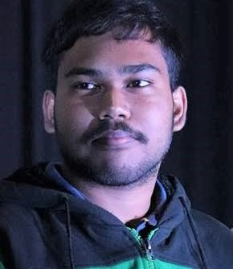

Multimodal AI
Developing solutions to evaluate student responses across multiple modalities.
PhD Scholar · IIT Bombay
I’m Pritam Sil, a PhD scholar in Computer Science at IIT Bombay. My research spans AI alignment, multimodal AI, SSL and AI in education , with a focus on building learning technologies that are useful, robust, and grounded in human judgment.

A little about me
I’m a PhD researcher working on developing data-efficient AI alignment solutions for multimodal AI and I’m fortunate to be advised by -
As part of BharatGen’s research initiatives, we collaborate with NGOs and other organizations to bring AI for Education research into practice. In the first year of my PhD, I had the privilege of being advised by the late Prof. Pushpak Bhattacharyya. I remain deeply grateful for his guidance, and his memory continues to shape my work.
My earlier MS Thesis includes developing an AI-assisted grading of handwritten answer sheets which was published at AIED 2024 and is currently deployed on the SAFE platform being used at IIT Bombay. Additionally, I have worked on research on multimodal human activity recognition.
What I work on
Developing solutions to evaluate student responses across multiple modalities.
Developing council-based verification of AI-generated educational questions, where SLMs act as judges aligned to expert decisions.
Designing AI teaching assistants, solutions for short-answer grading with feedback, and pronunciation assessment for language learners.
Training methods that stay reliable under noisy labels and imperfect supervision, from classification to large language models.
Building systems that assist teachers and learners rather than replace them, with explanations, feedback, and human in the loop solutions.
Developing semi-supervised techniques for automatic pronunciation assessment of L2 English speech.
Selected work
P. Sil, D. Karnam, V. Venumuddala, and P. Bhattacharyya
D. Aggarwal, P. Sil, B. Raman, and P. Bhattacharyya
M. Ghulyani*, P. Sil*, and A. Azad · *Equal contribution
P. Sil, P. Chaudhuri, and B. Raman
A. Das, P. Sil, P. K. Singh, V. Bhateja, and R. Sarkar
M. Ghosh, P. Sil, A. Roy, R. Fajriyah, and K. C. Mondal
M. Ghosh, A. Roy, P. Sil, and K. C. Mondal
Roles & positions
Designing data efficient AI alignment solutions for multimodal answer evaluation · Advisors: Prof. Ganesh Ramakrishnan, Prof. Pawan Goyal, and Dr. Venkatapathy Subramanian
Introduced AI-assisted grading to SAFE, developing an end-to-end pipeline for grading scanned handwritten answer sheets. Work published at AIED 2024. Advisors: Prof. Bhaskaran Raman and Prof. Parag Chaudhuri.
Studied relationships between system performance metrics and Spark parameters, and built a performance-monitoring tool. Advisor: Prof. Varsha Apte, IIT Bombay.
Researched on noise-robust training methods for large language models. Patent filed; manuscript to be submitted to TMLR.
Maintain the SAFE iOS app and backend server, used in production at IIT Bombay. Advisor: Prof. Bhaskaran Raman.
Developed an R Shiny app to forecast COVID-19 case counts at state and national levels. Advisor: Dr. Palash Ghosh, IIT Guwahati. More details here ↗
Wrote technical articles on genetic algorithms, DNA cryptography, and Java. Browse all my articles ↗
Academic background
IIT Bombay
IIT Bombay
Jadavpur University
A small window into my travels and moments away from research.
@monday_backpacker
The latest posts from my Instagram feed. If the feed is unavailable, visit the profile directly.
Visit InstagramInterested in research, collaboration, or a conversation about AI for education?